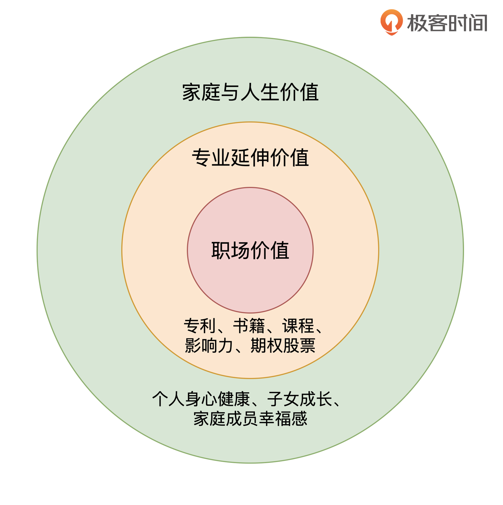

- 00 开篇词 为什么说程序员最适合学财富管理？.md.html
- 01 财富框架：建立属于你自己的财富双塔.md.html
- 02 个人发展：你自己的发展才是最大的财富源泉.md.html
- 03 理财金字塔：如何建立稳固的投资理财结构？.md.html
- 04 实战知识：有哪些收益稳健的经典资产配置组合？.md.html
- 05 支点投资法：主动投资是讲逻辑的！.md.html
- 06 不当韭菜：在财富管理的过程中摆正心态，知己知彼.md.html
- 07 职业方向：如何选择一个有前景的职业方向？.md.html
- 08 职业规划：大公司VS小公司，怎样选择更有前途？.md.html
- 09 期权股权：如何正确处理公司的期权、股权？.md.html
- 10 跳槽涨薪：如何规划一条合理的职业道路？.md.html
- 11 财富拓展：35岁失业？程序员如何拓宽财富渠道？.md.html
- 12 房产投资：如何做出理性的买房决策？.md.html
- 13 实战知识：让我们编程计算下怎么还房贷最合适.md.html
- 14 基金投资：如何让专业人士帮你赚钱？.md.html
- 15 实战知识：如何选出一只优质的基金？.md.html
- 16 股票投资：最适合散户的股票投资方法是什么？.md.html
- 17 投资闭环：如何成为越来越专业的投资者？.md.html
- 18 技术优势：程序员如何用技术超越其他投资者？.md.html
- 19 量化投资：典型的量化投资系统都包含哪些模块？.md.html
- 20 价值投资：永远不过时的中长期投资策略.md.html
- 21 趋势跟踪：怎样跟着趋势一起赚钱？.md.html
- 22 轮动策略：如何踩准市场变换的节奏？.md.html
- 23 对冲思想：这个世界上有稳赚不赔的生意吗？.md.html
- 24 多因子模型：整合不同策略，形成合力的顶层框架.md.html
- 25 机器学习：我们能用机器学习来建立投资模型吗？.md.html
- 26 量化实战：从0到1搭建起一套简单的量化投资系统（上）.md.html
- 27 量化实战：从0到1搭建起一套简单的量化投资系统（下）.md.html
- 番外一 王喆对话李腾：程序员对基金经理的灵魂十问（上）.md.html
- 番外三 有哪些能够持续学习的参考资料和相关网站？.md.html
- 番外二 王喆对话李腾：程序员对基金经理的灵魂十问（下）.md.html
- 番外四 知识总结：这门课的全部思维导图.md.html
- 答疑课堂（一） 财富框架篇、个人发展篇思考题集锦.md.html
- 答疑课堂（二） 投资实战篇、投资进阶篇思考题集锦.md.html
- 结束语 知行合一：财富管理是一生的事情.md.html
- 捐赠
02 个人发展：你自己的发展才是最大的财富源泉
你好，我是王喆，今天我们来聊一聊财富双塔中的“个人发展塔”。
很多同学一听到“财富管理”这个概念，就会把它跟“投资理财”划等号。也许你还想问我：我们这不是个理财课吗？为什么不先讲怎么投资基金、股票，一开始要聊“个人发展”这样听起来就很“务虚”的话题呢？
其实这是一个很大的误区。相比于投资理财，“个人发展”带来的自身价值的增长，才是我们应该首先关注的财富增长极。而且，如果你有很强的个人发展规划能力，自身价值增长带来的收益绝对不会比投资理财低。
今天这节课，我们就讲一讲“个人价值”都包括哪些，以及如何从财富管理的角度来进行个人发展规划，管理好我们自己这座财富金矿。
个人价值的三个同心圆
提到个人价值，这里还有一个常见的误区，就是把“个人价值”狭隘地理解为“职场价值”。这样的理解，不仅会导致我们错失很多个人发展的机会，而且本质上也造成了职场“内卷”现象。这一点也很好理解，当所有人都认为个人价值仅仅体现在工作中的时候，大家就会把全部的注意力和精力都集中到非常窄的空间中，怎么可能不“卷”起来呢？
要想让自己的价值得到充分的发展，首先我们应该清楚自己有哪些个人价值。在我看来，一个“社会人”的价值，应该由三个同心圆组成。它们由内而外依次是“职场价值”“专业延伸价值”和“家庭与人生价值”。接下来，我们看看它们具体都指什么。

首先是最核心的“职场价值”，也可以把它称为“专业能力价值”。它是我们在这个社会的立身之本，是让我们拿到人生第一桶金的一技之长。我们程序员见面时，最喜欢聊的话题就是哪个公司发展好，应该怎么提升自己的技术级，如何跳槽，如何谈offer等等，这些本质上都是为了提升我们的职场价值。
和“职场价值”密切相连的是“专业延伸价值”。顾名思义，它是由我们的专业能力延伸出来的个人价值。
举例子来说，我们加入一家创业公司，公司给我们的期权是延伸价值；我们在自己的专业领域达到一定的高度之后，申请的专利、写出的Paper、编著的技术书是延伸价值；我们通过技术博客、业界交流积攒起来的影响力是延伸价值；我们通过带团队、做架构逐渐沉淀下来的人脉和技术资源当然也是延伸价值。我们在做好本职工作之外，需要时刻去提升自己的“专业延伸价值”，因为积攒下来的个人价值才是你自己的财富。
最外圈是“家庭与人生价值”。我们的课程不会多讲这部分，但我们一定要清楚，这才是我们工作奋斗的终极意义。长期高强度加班，因此忽视自己乃至于整个家庭的身心健康和幸福感，这种做法绝对是本末倒置的。我在上一讲中描述的财富双塔架构图，也向你传达了这个意思：你的人生兴趣和家庭幸福才是双塔要支撑的天，这是双塔存在的意义。
要分清楚什么是财富，什么是收入
明确了个人价值的范围，下面我来讲一讲，如何利用财富管理的思路来提升我们的个人价值。
来听这门课的同学，有很多在职场上本身就已经非常成功了。你可能会说，我现在年薪百万，个人价值不是已经很高了吗？提升空间还有多大呢？
在这里我想说的是，不要混淆收入和财富这两个概念。年薪百万，是你的个人收入；你能够拿到百万年薪的能力，才是你的个人价值，或者说个人财富。而我们说要提升个人价值，管理自身的“财富金矿”，就是要持续提升自己的获得高薪的能力。
对个人价值的错误认知会对我们的个人发展产生影响吗？当然会了。最直接的就是对职业发展路线的影响。
我在知乎是“机器学习”等三个领域的优秀答主，收到过超过100位同行的职场咨询。下面是两个比较典型的案例：
案例一：
我在某二线互联网公司的算法岗工作了6年。现在，我收到了某一线公司P7级别的offer，包裹（offer package）总值70万；同时，还收到了另一个二线互联网公司同级别的offer，总值90万。我应该怎么选呢？
对于这类公司和收入之间的选择，如果按照财富管理的思路，我一般推荐选第一个。因为一线互联网公司的经验和技术级是职场的财富，而不仅仅是一份工作收入，它是有益于今后整个职业生涯的发展的。
其实，职场财富跟投资理财一样，都能够产生“复利”，而不仅仅是产生当前的现金流。所以我在给同行们提建议的时候，一般都会引导大家从积累职场财富的角度进行思考。你的选择应该建立在至少十年的职业规划，而不是最近三年的收入比较上。
案例二：
我在某一线互联网公司担任P7级别的程序员，现在我有机会去一家上升期的二线互联网公司，担任技术经理。我去不去呢？
这是一个典型的技术职位和管理职位之间的选择。如果以财富管理的思路来选择，我推荐去。因为互联网行业发展到现在，已经进入了一个存量竞争的阶段。这个时候，好的职位的稀缺性已经高于好的技术的稀缺性，因为在一个领域提出独创性技术的门槛已经非常高了。
这个时候，一个上升期公司的经理职位就成为更有价值的“财富”。业内的同学应该都清楚，从P7升到P8有多困难。与其熬四五年去搏一个技术级的提升，还不如抓住一个优质的经理职位。而且技术管理带来的经验提升和人脉积累，是技术上的提升无法替代的。这些都是今后职场发展的宝贵财富。
上面仅仅是两个职场规划的例子，事实上，offer的选择是一个综合考量多种因素的过程，我会在“个人发展篇”里的“职业规划”和“离职跳槽”这两讲中给你详细讲解。在这里，你只要分清什么是收入的提升，什么是职场财富的积累就可以了。在职业生涯的规划上，财富的积累往往比短期收入的提升更加重要，因为前者能够持续产生长期性的收益。
外包消耗型工作，积累财富型资源
财富管理的思路，除了用来进行职业规划，还应该贯彻到我们个人发展的每个方面。在本职工作上，我们要注意提升自己的专业能力价值；在业余时间，我们则应该时刻注意，提升自己的专业延伸价值。
在这里你可能会问：本来上了一天班就已经精疲力尽了，剩下不多的业余时间还要被通勤、做家务、陪伴家人这些琐事填满，我还有什么积累价值的时间？
这是个好问题，而且我承认这是大部分程序员都在面临的现实情况。但我要说，被这个问题困扰的同学一定没有搞明白一个重要的道理：人的精力确实是有限的，但我们应该关注人生中最重要的那些事情。而践行这个道理的关键点，就在于我们要始终“外包消耗型的工作，积累财富型的资源”。
这里的“消耗型的工作”，指的是那些消耗我们的精力，却无法带来财富积累的工作。典型的就是日常的家务，以及办证、办手续等琐碎的流程性工作。
举一个“外包消耗型工作”的例子吧。下面就是我外包出去的一些工作：
- 聘请一位做饭阿姨，负责做晚饭、洗碗等家务工作，每月2000元；
- 外包周末家务，聘请保洁公司负责每周的保洁工作，每月1500元；
- 在孩子出生后，聘请一位全职的育儿嫂，负责除了陪伴、教育以外的全部琐碎工作，每月7000元。
这大约10000元的外包花销，解放了我大量的业余时间和精力。这样，我晚上至少能有两个小时的时间去积累专业知识，管理各项投资。我用这些时间积累的专业延伸财富，现在产生的直接收益，已经远远超过了这每月10000元的花销，更不要提今后的升值潜力了。
而且，我也没有让我的爱人在这些琐碎事务上花太多时间和精力，因为这是对她个人价值的浪费，也会让整个家庭价值打折扣。我的父母、岳父母也没有过多参与这些琐碎的家务，他们有一个快乐的退休生活也是对整个大家庭的价值。而所有这些，都直接或间接地提升着我们所有人的幸福感和成就感，这是对我上面提到的“个人价值同心圆”的最好诠释。
事实上，我所熟识的成功人士，都贯彻了“外包消耗型的工作，积累财富型的资源”这个原则，而且更彻底、更坚决。比如，某互联网企业的总监，聘请了专业司机来负责家庭的所有出行工作，节省了大量打车、接机、接送孩子上学的时间；某教授外租自己距离稍远的房子，专门换租到离学校很近，可以步行上班的公寓，就是为了节省每天1小时的通勤时间。
我在这部分讲的所有例子，都是想告诉你一件事情：不要在小事上仔细，大事上糊涂。在个人发展的道路上，你必须时刻紧绷着“积累财富”这根弦，因为这是最重要的事情。
要注意个人发展过程中财富的自然生发
讲到这里，一些同学可能又有问题了。也许你会说：所谓的专业延伸价值哪有那么好积累？那都是大牛才能干的事情。当然我承认，大牛肯定更容易积累这样的专业财富，但是普通人同样有无数的机会，来让自己的专业能力发挥价值。因为大量的专业延伸价值根本不需要你挖空心思凭空创造，它们更多是在你个人发展的过程中自然生发而来的，你要做的就是用心抓住它们。
下面的三个例子，全都是我身边真实发生的事情，你可以体会一下他们是如何把专业能力转化成财富的：
- 小M是儿童医院的护士，有着大量儿童医护的经验和资料。在2011年，她跟老公一起通过外包建立了一个母婴类的网站，通过精心的打理，在2014年就能够产生每月1万元的收入。现在，她更是通过建立相应的App、公众号，每月收入超过5万元。
- 小A是一位大公司的会计，Excel重度使用者。2015年，他把自己最常用的Excel技巧整理成书。由于Excel的使用者极广，而且他书中的内容都来自于实战，实用性极强，因此这本书迅速畅销，仅靠稿费小A的年收入就超过了15万元。
- 小X是一位NLP（自然语言处理）方向的硕士研究生，他把平时读论文、模型实践的经验通过知乎、公众号分享出去，逐渐建立起了这个方向的头部大号，仅广告收入每个月就超过1万元。
你可以看到，他们中的任何一个人都不是这个方向的顶尖专家，而仅仅是一些有专业能力的从业者。但是，正因为他们能够让这些专业能力的财富从自己的日常工作中生发出来，所以积累起了能产生稳定现金流的财富型资源。
这一讲里，我围绕着“个人价值”举了很多例子，讲了很多个人发展过程中应该遵循的原则，但受限于篇幅，终究有一些浮光掠影。但请你不要着急，我们会在之后的“个人发展篇”中讲清楚有关个人发展的方方面面。
职场价值是我们个人价值的核心，这门课程会覆盖“公司选择”“职业方向选择”“升职跳槽”“谈offer，谈期权”这些涉及我们程序员切身利益的话题。对于程序员的专业延伸价值，我会专门谈一谈这个问题：如何以自己的专业能力为基础，拓展自己的财富渠道。
小结
在这一讲的最后，我再整理一下前面提到的几个关键概念，你一定要牢记，因为这是管理好我们个人价值的基础：
- 个人价值由三个同心圆组成，它们由内而外依次是“职场价值”“专业延伸价值”和“家庭与人生价值”。
- 在个人发展的道路上，要分清楚什么是财富，什么是收入。财富是能够持续产生收入的个人价值，而收入是一个瞬时量，是你个人价值带来的经济收益。
- 为了有更多时间和精力积累财富型资源，我们要尽量外包消耗型的工作。
- 专业延伸价值并不是你挖空心思凭空创造出来的，更多是在你个人发展的过程中自然生发而来的，你要做的就是用心抓住它们。
为了搭建我们财富双塔框架中不可或缺的“个人发展塔”，这一讲明确了个人发展中的关键原则。但这只是个开始，我会在之后的“个人发展篇”中介绍更多程序员关心的热门话题，期待与你一同学习讨论。
思考题
算法工程师几乎是最近五年来最火热的职位，很多其他方向的工程师也期待转向算法方向，获得更高的收入。如果你是一位工作五年的Java工程师，你会做出这样的选择吗？你可以用今天提到的财富管理的理念分析回答这个问题吗？
© 2019 - 2023 Liangliang Lee. Powered by gin and hexo-theme-book.